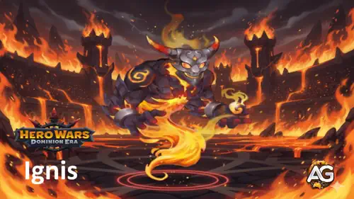
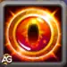
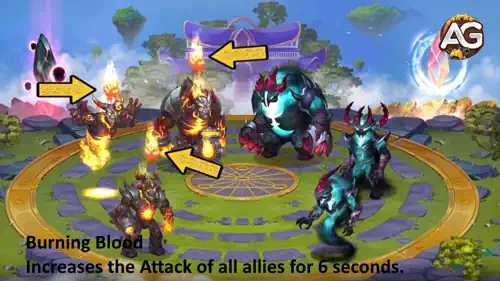
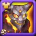
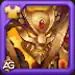
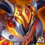
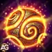
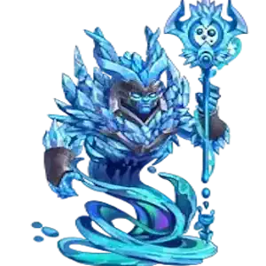

Guia do Ignis - Melhores Habilidades & Artefatos para Hero Wars: Dominion Era
- Por: Alexandre Domingos. .
Você já imaginou como seria ter uma força invisível multiplicando o poder de cada aliado no campo de batalha? É exatamente isso que Ignis, a Chama Punitiva, oferece em Hero Wars: Dominion Era. Como um Titã de Suporte da linha traseira, Ignis vira o rumo da guerra não atacando inimigos diretamente, mas acendendo uma onda imparável de Ataque em todos os Titãs aliados por meio de sua devastadora habilidade Sangue Ardente.
Este guia completo vai te mostrar tudo o que você precisa saber sobre Ignis — desde suas habilidades e artefatos até as melhores fusões de totem, skins, contras e composições de time. Seja escalando no ranking PvP ou avançando por salas difíceis de Masmorras, entender como maximizar as capacidades de suporte do Ignis transformará seus times de Fogo em uma fornalha imparável que seus adversários não conseguirão sobreviver.

Quem é Ignis?
Ignis é um Titã de Suporte do elemento Fogo conhecido como a "Chama Punitiva", especializado em aumentar drasticamente o poder ofensivo de todos os Titãs aliados. Lutando com segurança pela linha traseira, Ignis canaliza a fúria do fogo para amplificar o Ataque de seu time por meio de sua habilidade ultimate, Sangue Ardente. Sua presença no campo de batalha transforma causadores de dano modestos em máquinas devastadoras capazes de superar até os adversários mais resistentes.
- Função: Suporte
- Elemento: Fogo
- Posição: Linha Traseira
- Sinergia: Araji, Asherona, Vulcão, Moloch
O que torna Ignis verdadeiramente especial é sua capacidade de amplificar o Ataque de todo o time em impressionantes 567.126 pontos por 6 segundos — um buff que escala com seu próprio stat de Ataque. Isso significa que quanto mais você investir no Ataque do Ignis, mais forte cada aliado se tornará durante essas janelas críticas de burst. Em um jogo onde batalhas são frequentemente decididas em segundos, esse tipo de pico de poder em toda a equipe pode virar completamente o resultado.
Ignis prospera em composições com muitos Titãs de Fogo, onde o Totem do Espírito do Fogo ativa com plena força. Aliado a Titãs de Fogo agressivos como Araji, Asherona e Vulcão, Ignis cria um ambiente onde os inimigos são superados pela pura potência de fogo antes de conseguirem montar uma defesa adequada. Sua posição na linha traseira o mantém seguro da maioria dos ataques diretos, permitindo que ele entregue seus buffs decisivos de forma consistente ao longo da batalha.
Prós e Contras do Ignis - Hero Wars: Web & Facebook
✅ Prós
- Buff de Ataque Massivo para Todo o Time: Sangue Ardente aumenta o Ataque de TODOS os Titãs aliados em 567.126 por 6 segundos, criando janelas de burst devastadoras que podem eliminar times inimigos antes que reajam.
- Poder de Suporte Escalável: A força do buff depende do próprio stat de Ataque do Ignis, significando que cada investimento em seu Ataque amplifica diretamente o time inteiro — um retorno composto de recursos.
- Posição Segura na Linha Traseira: Lutando pela linha traseira, Ignis evita a maioria dos danos diretos e ataques em área, garantindo que sobreviva tempo suficiente para entregar múltiplas ativações de Sangue Ardente.
- Sinergia Excepcional com Fogo: Quando combinado com Araji, Asherona, Vulcão ou Moloch, Ignis ativa facilmente o Totem do Espírito do Fogo, que causa 1.659.461 de dano em área por ativação e aumenta o Ataque de todos os Titãs de Fogo em 299.673.
- Janelas de Burst Decisivas: A janela de buff de Ataque de 6 segundos cria oportunidades de burst coordenadas que podem eliminar alvos prioritários antes que curandeiros ou escudos inimigos respondam.
❌ Contras
- Nenhum Dano Direto: Ignis não causa dano pessoal algum — ele depende totalmente dos aliados para converter seus buffs em abates, tornando-o inútil se os aliados caírem cedo.
- Duração Limitada do Buff: A janela de 6 segundos do Sangue Ardente é breve; se os inimigos sobreviverem à fase de burst, o time perde sua vantagem até a próxima ativação, ficando vulnerável durante o tempo de espera.
- Fraco contra o Elemento Água: Como Titã de Fogo, Ignis e seu time de Fogo são altamente vulneráveis a Titãs de Água como Hiperião, Sigurd e Tidus, que causam mais dano e resistem aos ataques de Fogo.
- Dependência do Time de Fogo: Ignis atinge seu potencial máximo somente em composições com muitos Titãs de Fogo, com pelo menos 3 para ativar o totem, limitando a flexibilidade de montagem de time em comparação a suportes mais versáteis.
- Frágil Sem Proteção: Apesar de sua posição na linha traseira, Ignis não possui cura própria nem habilidades de escudo — uma vez que ataques em área ou habilidades direcionadas o alcancem, ele pode cair rapidamente sem cobertura adequada de tanques.
Guia de Habilidades do Ignis - Hero Wars: Dominion Era
Entenda as mecânicas de suporte flamejante do Ignis e aprenda a desencadear buffs de Ataque devastadores para o time inteiro que viram batalhas inteiras a seu favor.

Habilidade 1: Sangue Ardente (Ultimate)
Sangue Ardente é a habilidade ultimate característica do Ignis e o motivo de ele ser um dos Titãs de Suporte mais impactantes do jogo. Quando ativada, Ignis canaliza a essência do fogo em cada Titã aliado no campo de batalha, aumentando o Ataque deles em impressionantes 567.126 pontos por 6 segundos. Pense assim: imagine cada um dos seus Titãs repentinamente causando 567.126 pontos a mais em cada ataque, habilidade e skill — todos ao mesmo tempo. Esse é o poder do Sangue Ardente.
O que torna essa habilidade ainda mais poderosa é que a quantidade do buff depende do próprio stat de Ataque do Ignis. Isso significa que quanto mais você investir em aumentar o Ataque do Ignis através de artefatos, skins e efeitos de totem, mais forte o buff se torna para todo o seu time. É um investimento multiplicador — cada ponto de Ataque que você dá ao Ignis se traduz em dano amplificado em todos os cinco Titãs durante esses 6 segundos críticos.
Fórmula: Buff de Ataque = (567.126) baseado no (Ataque do Ignis). Duração: 6 segundos. Afeta todos os Titãs aliados no campo de batalha.
No PvP, Sangue Ardente cria uma janela de burst decisiva que pode eliminar os Titãs da linha de frente inimiga antes que eles usem seus escudos ou habilidades de cura. Em batalhas de Masmorras, o aumento de Ataque de todo o time acelera as limpezas e ajuda seu time de Fogo a superar as fases tanky de chefes. A chave para dominar o Ignis é sincronizar o Sangue Ardente com as habilidades ultimate dos seus causadores de dano — quando Araji ou Vulcão desencadeiam seus ataques durante a janela de buff, o dano combinado se torna quase impossível de sobreviver.
Prioridade de Evolução: Muito Alta — Este é o propósito completo do Ignis. Maximizar o Sangue Ardente significa maximizar a saída de dano de todo o seu time durante cada janela de burst.

Dica Estratégica do Alexandre:
Ative o Sangue Ardente logo antes dos seus causadores de dano mais pesados usarem suas habilidades ultimate. A janela de 6 segundos é curta — aproveitá-la bem é a diferença entre uma eliminação devastadora do time e um buff desperdiçado. Combine com Araji ou Vulcão para o máximo impacto de burst.

Habilidade 2 - Totem Principal: Totem do Espírito do Fogo
O Totem do Espírito do Fogo é a pedra angular elemental que alimenta cada time baseado em Fogo em Hero Wars: Dominion Era. Ele requer pelo menos 3 Titãs de Fogo no campo de batalha para ativar — facilmente alcançado com Ignis ao lado de Araji, Asherona, Vulcão ou Moloch. Uma vez ativo, o totem desencadeia a Era das Chamas, uma tempestade de fogo devastadora que varre todo o time inimigo e causa enorme dano em área aos oponentes próximos.
Os números falam por si: cada ativação causa 1.659.461 de dano aos inimigos apanhados na tempestade. Mas o Totem do Espírito do Fogo não para por aí — ele também aumenta permanentemente o Ataque de todos os Titãs de Fogo em 299.673, fazendo com que cada Titã de Fogo no seu time ataque com mais força mesmo fora da janela de burst do Sangue Ardente. Para o Ignis especificamente, esse bônus de Ataque é duplamente valioso porque aumenta o poder do próprio Sangue Ardente, criando um efeito composto: o totem deixa o Ignis mais forte, o que deixa o buff dele mais forte, o que deixa todo o time mais forte.
Fórmula: Dano por Ativação = (1.659.461). Bônus de Ataque dos Titãs de Fogo = (+299.673).
Em cenários de PvP, a Era das Chamas age como pressão contínua em área que vai desgastando a vida dos inimigos enquanto seus Titãs com o buff do Sangue Ardente entregam dano massivo de burst. No modo Masmorras, o dano em área persistente ajuda a limpar ondas de inimigos de forma eficiente, enquanto o bônus permanente de Ataque garante que seu time de Fogo mantenha alta saída de dano ao longo de encontros prolongados. A ativação do totem é automática assim que o requisito de elemento for cumprido, tornando-o uma fonte confiável e consistente de dano e empoderamento do time.

Dica de Ativação do Totem:
Sempre monte seu time com pelo menos 3 Titãs de Fogo para garantir a ativação do Totem do Espírito do Fogo. O bônus permanente de +299.673 de Ataque para todos os Titãs de Fogo amplifica diretamente o buff Sangue Ardente do Ignis, criando um ciclo de poder crescente que se torna avassalador conforme a batalha avança.
Melhor Fusão de Totem Elemental para Ignis
As Fusões de Totem Elemental dão ao Ignis poderosas habilidades adicionais que ativam junto com o Totem do Espírito do Fogo. Escolher a fusão certa pode ser a diferença entre vencer e perder uma batalha apertada — especialmente para um Titã de Suporte cuja sobrevivência impacta diretamente o poder de todo o time.
Como Funciona a Fusão de Totem?
Imagine o sistema de Fusão de Totem como uma forja onde você investe Catalisadores Elementais para desbloquear novas habilidades de batalha para o totem do seu Titã. Na janela de Fusão, você seleciona o tipo de habilidade (Elemental ou Primordial), escolhe a capacidade desejada e decide quantos Catalisadores investir. Quanto mais Catalisadores você usar, maiores as chances de obter aquela habilidade — e em nível melhor. Se o seu totem já possui uma habilidade de fusão específica, tentar fundir a mesma habilidade novamente aumenta as chances de obter uma versão de nível mais alto. Quando dois totens diferentes compartilham a mesma habilidade, apenas o de nível mais alto ativa na batalha. Habilidades Elementais se ativam globalmente sem cooldown, salvo indicação contrária, enquanto Habilidades Primordiais ativam com base em condições específicas e têm cooldowns individuais por Titã. Se o resultado não se encaixar na sua estratégia, você pode rejeitá-lo e restaurar o totem ao estado anterior — mas os Catalisadores gastos serão consumidos de qualquer forma.
1º - Last Flash

Totem Elemental: Last Flash
Last Flash é absolutamente a melhor Fusão de Totem Elemental para Ignis, e o motivo é simples: todo o valor do Ignis está atrelado a permanecer vivo. Quando Ignis normalmente morreria, o Last Flash é ativado — ele entra em um estado de fúria ardente, tornando-se completamente invulnerável a todos os efeitos por 5 segundos. Durante esse tempo, sua velocidade aumenta em 15% e seu Ataque é elevado em 16.100 (depende do poder do totem). Sua vida não pode cair abaixo de 1, e nenhum controle de multidão ou dano pode tocá-lo. Essa janela de 5 segundos de invulnerabilidade é preciosa para o Ignis porque garante mais uma ativação de Sangue Ardente, dando a todo o seu time um burst adicional de +567.126 de Ataque exatamente quando o inimigo pensa ter eliminado seu suporte. No PvP, essa surpresa no final da batalha frequentemente transforma derrotas certas em vitórias dramáticas. Na Masmorra, ele fornece uma rede de segurança crítica que mantém os buffs do Ignis ativos durante as fases mais perigosas dos chefes. Há 1 ativação por batalha.
2º - Ice Age

Totem Elemental: Ice Age
Ice Age garante o segundo lugar criando um momento de contra-jogo devastador que sinergiza perfeitamente com as janelas de burst do Sangue Ardente. No instante em que a habilidade base de totem do oponente ativa, Ice Age congela todo o time deles por 1 segundo e aplica um debuff de Fragilidade que aumenta todo o dano recebido em 15,8% (depende do poder do totem) por 5 segundos (depende do rank da habilidade). Imagine: o inimigo ativa o totem pensando que vai ganhar vantagem, mas em vez disso todo o time dele congela sólido e recebe 15,8% a mais de dano de tudo. Se o Sangue Ardente estiver ativo durante essa janela, a combinação é absolutamente devastadora — seu time inteiro ataca com mais força E os inimigos recebem ainda mais dano. Na defesa PvP, o Ice Age pune oponentes agressivos que dependem de ativações precoces de totem. Em batalhas de Masmorras, cria janelas de segurança durante mecânicas perigosas de chefes enquanto amplifica a saída geral de dano do seu time.
3º - Flame Dance

Totem Elemental: Flame Dance
Flame Dance ocupa o terceiro lugar como a opção de dano consistente que compensa a falta de saída de dano pessoal do Ignis. Ele invoca um vórtice flamejante que varre o time inimigo, causando 126.875 de dano (depende do poder do totem e rank da habilidade) aos oponentes próximos a cada ativação. Como Habilidades Elementais não têm cooldown e se ativam globalmente, o Flame Dance fornece um fluxo constante de dano em área de fogo que pressiona o time inimigo ao longo de toda a batalha. Embora careça do impacto dramático da mecânica de sobrevivência do Last Flash ou do controle de multidão do Ice Age, o Flame Dance adiciona dano confiável que complementa a Era das Chamas do Totem do Espírito do Fogo. Para cenários de Masmorras onde as batalhas são mais longas e o dano sustentado importa mais que o burst, o Flame Dance ajuda a desgastar inimigos resistentes enquanto o Sangue Ardente cuida das fases de burst. Porém, para PvP de alto nível onde decisões são tomadas em segundos, as duas primeiras opções oferecem vantagens táticas mais impactantes.
Melhor Fusão de Totem Primordial para Ignis
As Fusões de Totem Primordial fornecem habilidades baseadas em condições com cooldowns individuais por Titã. Para o Ignis, a fusão Primordial certa aumenta sua sobrevivência e geração de energia, garantindo que ele viva o suficiente para entregar múltiplas ativações de Sangue Ardente.
1º - Pulse of the Ancients

Totem Primordial: Pulse of the Ancients
Pulse of the Ancients é a melhor fusão Primordial para o Ignis porque aborda diretamente sua maior fraqueza: falta de auto-sustento. Toda vez que Ignis usa uma habilidade, ele é curado em 112.000 de HP (depende do poder do totem), com ativações no máximo uma vez a cada 21 segundos (depende do rank da habilidade). Como Ignis cicla ativamente pelo Sangue Ardente e se beneficia de interações frequentes com o totem, essa cura se ativa consistentemente ao longo das batalhas. Para um Titã de Suporte sem cura própria nem escudos, esse sustento passivo é inestimável — mantém o Ignis vivo mais tempo, o que significa mais ativações de Sangue Ardente, buffs de time mais fortes e maior impacto geral. Em batalhas prolongadas de Masmorras, o Pulse of the Ancients reduz significativamente a pressão sobre os recursos de cura do seu time. No PvP, essa sobrevida extra pode ser a diferença entre dar mais um Sangue Ardente crucial antes que Ignis caia.
2º - Primal Zeal

Totem Primordial: Primal Zeal
Primal Zeal fica em segundo lugar acelerando o acesso do Ignis ao Sangue Ardente por meio de geração de energia mais rápida. Ao usar habilidades básicas, Ignis tem 20% de chance (depende do rank da habilidade) de restaurar 40% de sua energia máxima (depende do poder do totem). Na prática, isso significa que Ignis pode potencialmente ativar o Sangue Ardente significativamente mais vezes — e mais ativações de Sangue Ardente significa mais janelas de burst para todo o seu time. Imagine seu time recebendo dois buffs de Sangue Ardente no tempo em que o inimigo espera apenas um. Esse é o potencial do Primal Zeal. Porém, a chance de ativação de 20% o torna menos consistente do que a cura garantida do Pulse of the Ancients. No PvP, um proc sortudo do Primal Zeal pode criar um Sangue Ardente antecipado inesperado que pega os oponentes desprevenidos. Na Masmorra, a aceleração de energia ajuda a manter buffs de Ataque sustentados ao longo de lutas mais longas, embora a aleatoriedade o torne não confiável como estratégia primária.
3º - Call of Elements

Totem Primordial: Call of Elements
Call of Elements ocupa o terceiro lugar com uma mecânica única de "último suspiro" que sinergiza especificamente com o buff dependente de Ataque do Ignis. O Ataque do Titã aumenta em 2.100 (depende do poder do totem) para cada 21% da vida máxima ausente (depende do rank da habilidade). Para o Ignis, isso cria uma dinâmica fascinante: à medida que ele recebe dano e sua vida cai, seu stat de Ataque cresce — e como o valor do buff do Sangue Ardente depende do Ataque do Ignis, um Ignis ferido na verdade oferece buffs mais fortes para o time. Quando combinado com o Last Flash da Fusão de Totem Elemental, o Call of Elements atinge seu pico de potencial: durante aqueles 5 segundos de invulnerabilidade com 1 de vida, o Ignis tem escalonamento máximo de Ataque pelo Call of Elements e pode entregar o Sangue Ardente mais poderoso possível. Porém, para uso geral, o requisito de receber dano para ganhar valor o torna mais arriscado do que cura consistente ou geração de energia. É mais indicado para jogadores avançados que conseguem gerenciar taticamente o estado de vida do Ignis.
Melhor Skin para o Titã Ignis - Hero Wars: Dominion Era
Priorizar as skins certas para o Ignis garante sobrevivência máxima e eficácia de suporte. Aqui está a análise para os modos PvP e Masmorras.

Skin Padrão
Vida: +1.022.985
Prioridade de Evolução no PvP: Alta – O enorme aumento de vida aumenta diretamente a sobrevivência do Ignis na linha traseira. Mais vida significa mais tempo vivo, o que se traduz em mais ativações de Sangue Ardente e buffs de Ataque de time mais fortes ao longo da batalha.
Prioridade de Evolução na Masmorra: Alta – Encontros prolongados de Masmorras exigem presença sustentada. O aumento substancial de vida permite ao Ignis sobreviver a múltiplas ondas e mecânicas de chefe, garantindo buffs de Ataque consistentes e suporte do Totem do Espírito do Fogo ao longo dos encontros extensos.

Skin Campeão
Armadura Elemental: +49.065
Prioridade de Evolução no PvP: Média – A Armadura Elemental oferece valor defensivo contra matchups de elementos específicos, mas o bônus é relativamente modesto em comparação com o aumento de vida da Skin Padrão. Oferece valor de nicho ao enfrentar times pesados de Terra, mas não fornece a proteção universal que a vida bruta oferece.
Prioridade de Evolução na Masmorra: Média – Em salas de Masmorras com inimigos de elementos mistos, a Armadura Elemental ajuda a reduzir o dano recebido. Porém, como os encontros de Masmorras variam em composição de elementos, a eficácia desta skin é inconsistente. Priorize após a Skin Padrão para progressão geral.

Skin Mecânica
Dano Elemental: +230.160
Ganho de Poder: +15.651
Prioridade de Evolução no PvP: Baixa - Ignis é principalmente um Titã de suporte, e seu maior valor vem de sobreviver tempo suficiente para usar Sangue Ardente. O Dano Elemental desta skin não aumenta a força do buff de Ataque, então ela deve ficar como última prioridade depois da Skin Padrão e da Skin Campeão.
Prioridade de Evolução na Masmorra: Média-Baixa - O dano elemental extra pode acelerar um pouco as salas de Fogo, mas sobrevivência ainda é mais importante para o Ignis. Evolua esta skin apenas quando as skins defensivas já estiverem fortes.
Ordem Recomendada de Skins: Skin Padrão primeiro pela Vida universal, Skin Campeão em segundo pela defesa extra e Skin Mecânica por último para Dano Elemental opcional.
Prioridade de Evolução de Artefatos do Ignis - Hero Wars: Dominion Era
A priorização de artefatos para o Ignis foca em maximizar seu stat de Ataque para amplificar o Sangue Ardente e garantir sobrevivência para entregar buffs consistentes ao time.

Artefato Fagulha de Ragni
Dano Elemental: +479.475
Aumenta o dano causado por ataques e habilidades contra Titãs de Terra. Torna-se menos eficaz quando o Titã atacante causa dano a Titãs de nível mais alto.
Prioridade de Evolução no PvP: Média-Alta – A Fagulha de Ragni amplifica o dano do time de Fogo contra oponentes do elemento Terra, que é onde os times de Fogo têm vantagem elemental natural. No PvP, este artefato brilha ao enfrentar composições pesadas de Terra com Éden, Sylva, Avalon, Verdoc e Phyto ou Angus. Embora o próprio Ignis não cause dano direto, o aumento de dano elemental beneficia todos os ataques do time de Fogo contra Titãs de Terra.
Prioridade de Evolução na Masmorra: Alta – Em salas de Masmorras com Titãs de Terra, a Fagulha de Ragni acelera significativamente as limpezas ao amplificar as vantagens elementais do seu time de Fogo. O bônus consistente ajuda a avançar em salas focadas em Terra e encontros de elementos mistos onde Titãs de Terra aparecem. A redução de eficácia por nível contra oponentes de nível mais alto é uma consideração para o conteúdo de final de jogo.

Artefato Coroa de Fogo
Armadura Elemental: +97.482
Protege o Titã contra os ataques de Titãs de Terra. Torna-se menos eficaz quando o Titã defensor recebe dano de Titãs de nível mais alto.
Prioridade de Evolução no PvP: Média – A Coroa de Fogo oferece valor defensivo contra Titãs de Terra, mas como Fogo já tem vantagem elemental sobre Terra, essa proteção costuma ser suplementar. A armadura é mais valiosa em cenários onde Titãs de Terra de alto poder conseguem mirar o Ignis diretamente, mas sua posição na linha traseira já minimiza esse risco. Priorize outros artefatos primeiro, a menos que times de Terra sejam dominantes no seu meta.
Prioridade de Evolução na Masmorra: Média – Em salas de Masmorras com inimigos de Terra, a armadura oferece proteção sólida. Porém, a natureza situacional da defesa elemental específica a torna prioridade secundária. Times de Fogo já lidam com salas de Terra eficientemente por vantagem elemental, então a armadura defensiva é menos impactante do que investimentos ofensivos ou baseados em vida.

Artefato Selo do Equilíbrio
Vida: +3.995.583
Ataque Físico: +299.673,8
Prioridade de Evolução no PvP: Muito Alta – O Selo do Equilíbrio é o artefato mais crítico do Ignis e deve ser sua prioridade absoluta. O aumento de quase 4 milhões de vida prolonga dramaticamente a sobrevivência do Ignis, garantindo que ele entregue múltiplas ativações de Sangue Ardente ao longo da batalha. Mas o verdadeiro divisor de águas é o bônus de +299.673,8 de Ataque — como o poder do buff do Sangue Ardente escala com o stat de Ataque do Ignis, este artefato torna diretamente cada ativação de Sangue Ardente mais forte para todo o seu time. É um investimento duplo: mais vida significa que o Ignis vive mais tempo E mais Ataque significa que cada segundo que ele está vivo oferece maior amplificação de dano do time.
Prioridade de Evolução na Masmorra: Muito Alta – A combinação de vida massiva e Ataque torna o Selo do Equilíbrio universalmente essencial para qualquer modo de jogo. Na Masmorra, a vida garante que o Ignis sobreviva a múltiplas ondas e encontros prolongados de chefes, enquanto o bônus de Ataque garante ativações cada vez mais poderosas de Sangue Ardente conforme você avança. Ao contrário de artefatos específicos de elemento, o Selo do Equilíbrio oferece valor em cada sala de Masmorras independentemente da composição inimiga — tornando-o a prioridade indiscutível para evolução de artefatos.
Como Contrariar o Titã Ignis - Hero Wars: Dominion Era
Ignis e seus aliados Titãs de Fogo — Araji, Vulcão, Asherona e Moloch — compartilham uma fraqueza crítica: o elemento Água. Titãs de Água causam mais dano a Titãs de Fogo e resistem a seus ataques, tornando-os o contador natural de qualquer composição liderada por Ignis. Aqui estão os Titãs de Água que neutralizam o Ignis com mais eficácia:

Hiperião
Hiperião é o contra definitivo do Ignis como Super Titã do elemento Água. Seus stats avassaladores e saída de poder bruto destroçam times de Fogo antes que o Ignis consiga acumular buffs significativos de Sangue Ardente. O enorme dano em área do Hiperião atravessa Titãs de Fogo independentemente de seus buffs de Ataque, e sua vantagem elemental de Água garante que cada golpe atinja o Ignis e seus aliados com força devastadora.

Mairi fornece buffs defensivos e cura do elemento Água que neutralizam o impacto dos aumentos de Ataque do Ignis. Seus escudos e sustento ajudam seu time de Água a absorver o dano amplificado dos Titãs de Fogo com o buff do Sangue Ardente, efetivamente prolongando a batalha além das janelas de burst do Ignis até o buff expirar. Ao estender a luta além da fase de burst do Ignis, Mairi permite que seus aliados de Água desmontem sistematicamente o time de Fogo.
Sigurd é um Tanque de Água cuja enorme reserva de vida e armadura elemental permitem absorver os ataques aprimorados dos Titãs de Fogo com o buff do Sangue Ardente sem cair. Suas habilidades de tanque protegem os membros mais frágeis da linha de trás do time de Água, comprando tempo crucial para que os causadores de dano de Água mirarem o Ignis. A vantagem elemental de Água do Sigurd reduz todo o dano de Fogo recebido, tornando-o uma muralha que times liderados pelo Ignis têm dificuldade em romper.
Tidus e seu companheiro Gelo são devastadores contra o Ignis porque contam como 2 Titãs de Água, permitindo cura e ativação rápida do Totem do Espírito da Água. O debuff de Fragilidade do Gelo torna o Ignis ainda mais vulnerável ao dano de Água, enquanto o Totem do Espírito da Água fornece tanto cura para o time do Tidus quanto dano sustentado ao time de Fogo. A pressão simultânea de duas entidades de Água supera as capacidades de suporte do Ignis e neutraliza a segurança de sua linha traseira.
Melhores Times do Ignis - Hero Wars: Dominion Era
Estas composições de time maximizam o potencial de suporte do Ignis combinando sinergias do elemento Fogo com ativações estratégicas de totem secundário. A abordagem de totem duplo garante tanto poder ofensivo quanto sobrevivência sustentada em batalhas de PvP e Masmorras.
| Time 1: Fogo + Água - Melhores Times do Ignis | ||||
|---|---|---|---|---|
|
|
|
|
|
|
|
|
Last Flash |
Pulse of the Ancients |
||
|
|
Ice Age |
Primal Zeal |
||
Estratégia do Time 1
Ignis (Suporte - Fogo): O bufador central deste time. Sangue Ardente amplifica o Ataque de cada aliado em 567.126 por 6 segundos, criando janelas de burst devastadoras para seus causadores de dano. Posicione-o com segurança na linha traseira.
Araji (Super Titã - Fogo): O principal causador de dano. O enorme dano único e em área do Araji se torna absolutamente devastador combinado com o buff de Ataque do Sangue Ardente. Durante a janela de buff, os golpes do Araji atingem níveis avassaladores que podem eliminar alvos prioritários com um único golpe.
Tidus (Invocador - Água): O pick de dupla finalidade estratégica. Tidus e seu companheiro Gelo contam como 2 Titãs de Água e, combinados com Sigurd, ativam o Totem do Espírito da Água (3 Titãs de Água no total). O buff de dano e cura do Tidus são incríveis.
Asherona (Invocador - Fogo): Asherona e seu companheiro Pyro fornecem presença adicional de Fogo e sinergia de invocação. Ela ajuda a manter os 3 Titãs de Fogo necessários para a ativação do Totem do Espírito do Fogo (Ignis + Araji + Asherona). Seu invocado também adiciona mais um corpo no campo para se beneficiar do Sangue Ardente.
Sigurd (Tanque - Água): O protetor da linha de frente que absorve dano para todo o time. Combinado com Tidus + Gelo, Sigurd completa os 3 Titãs de Água necessários para a ativação do Totem do Espírito da Água, permitindo poder de totem duplo.
Estratégia de Totem Duplo: Este time ativa TANTO o Totem do Espírito do Fogo (Ignis + Araji + Asherona = 3 Fogo) quanto o Totem do Espírito da Água (Tidus + Gelo + Sigurd = 3 Água) simultaneamente. A Era das Chamas do Totem de Fogo causa 1.659.461 de dano em área, enquanto o Totem de Água fornece cura e dano adicional, criando pressão avassaladora no campo de batalha de duas fontes elementais ao mesmo tempo.
| Time 2: Fogo + Trevas - Melhores Times do Ignis | ||||
|---|---|---|---|---|
|
|
|
|
|
|
|
|
Last Flash |
Pulse of the Ancients |
||
|
|
Flame Dance |
Call of Elements |
||
Estratégia do Time 2
Ignis (Suporte - Fogo): Mesmo papel central — Sangue Ardente fornece buffs massivos de Ataque para todo o time. Nesta composição, o buff amplifica simultaneamente tanto causadores de dano de Fogo quanto das Trevas.
Tenebris (Trevas): Um poderoso Titã das Trevas que se beneficia enormemente do aumento de Ataque do Sangue Ardente. Tenebris também cumpre o requisito do elemento Trevas para a ativação do Totem do Espírito das Trevas ao lado de Brustar — apenas 2 Titãs das Trevas são necessários.
Araji (Super Titã - Fogo): O principal causador de dano de Fogo cuja saída devastadora se torna avassaladora sob o Sangue Ardente. Araji ajuda a manter os 3 Titãs de Fogo necessários para o Totem do Espírito do Fogo.
Asherona (Invocador - Fogo): Completa o trio de elemento Fogo para a ativação do Totem do Espírito do Fogo e fornece utilidade de invocação. Seu companheiro Pyro adiciona mais um corpo que se beneficia do Sangue Ardente.
Brustar (Trevas): O segundo Titã das Trevas necessário para ativar o Totem das Trevas. Junto com Tenebris, Brustar ativa a habilidade Buraco Negro — um poderoso AoE que arrasta inimigos para o centro do time e os causa dano por 5 segundos.
Estratégia de Totem Duplo: Este time ativa o Totem do Espírito do Fogo (Ignis + Araji + Asherona = 3 Fogo) e o Totem do Espírito das Trevas (Tenebris + Brustar = 2 Trevas, apenas 2 necessários). A Era das Chamas do Totem de Fogo entrega 1.659.461 de dano em área, enquanto o Buraco Negro do Totem das Trevas arrasta os inimigos para o centro e os causa dano por 5 segundos. A combinação de deslocamento de multidão do Buraco Negro e AoE sustentado da Era das Chamas cria uma zona de fogo cruzado mortal da qual os inimigos não conseguem escapar.
Conclusão
Ignis se destaca como um dos Titãs de Suporte mais impactantes em Hero Wars: Dominion Era, capaz de transformar cada aliado no campo de batalha em uma ameaça significativamente mais perigosa. Sua habilidade Sangue Ardente entrega um impressionante buff de +567.126 de Ataque para todos os Titãs aliados — um pico de poder que escala com seu próprio stat de Ataque, tornando cada investimento em Ignis um investimento multiplicado em todo o seu time.
Priorize o artefato Selo do Equilíbrio acima de todos os outros: sua combinação de quase 4 milhões de vida e +299.673 de Ataque amplifica diretamente tanto a sobrevivência do Ignis quanto o poder de cada ativação de Sangue Ardente. Para fusões de totem, Last Flash é a escolha Elemental essencial que mantém o Ignis vivo para um burst extra crucial, enquanto Pulse of the Ancients fornece o sustento Primordial que ele precisa para manter seu papel de suporte ao longo de batalhas prolongadas.
As composições de time de totem duplo com Fogo + Água ou Fogo + Trevas permitem que Ignis brilhe tanto em estratégias puramente ofensivas quanto de controle de multidão. Lembre-se: a maior força do Ignis não é o que ele faz sozinho, mas o que ele permite que seus aliados realizem. Domine o timing do Sangue Ardente, proteja-o contra os contras do elemento Água, e você comandará um time de Fogo cujo poder combinado poucos adversários conseguirão suportar.

Explore novas habilidades com nossos guias em destaque!


Deixe Sua Opinião!
Você gostou do nosso Guia do Ignis para Hero Wars: Dominion Era? Há algo que não entendeu ou gostaria de sugerir mudanças? Convidamos você a participar da seção de comentários no Blog Alexandre Games. Fique à vontade para expressar sua opinião, esclarecer suas dúvidas e compartilhar suas sugestões.
Clique no botão abaixo para começar: